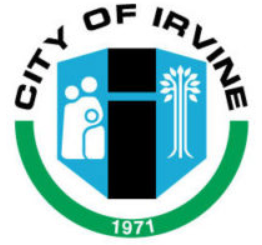

Highland Park was established in 1971 and has grown into a thriving community with a diverse population. Our history is rich with cultural and historical significance, including landmarks that reflect our community's roots and evolution over time.
Our neighborhood has seen significant growth, but it remains rooted in traditions that honor our past and celebrate our future. Local festivals, historical sites, and community gatherings are all reminders of our vibrant heritage.
At the Highland Park Community Board, we are committed to building a welcoming, inclusive, and sustainable environment. We aim to support residents in various areas, including safety, environmental initiatives, and social engagement.
We offer a variety of programs designed to serve and support our residents. From youth engagement to environmental efforts, these programs create a stronger community: